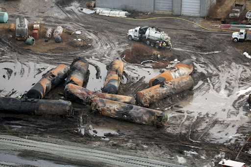

In early February, the quiet town of East Palestine, Ohio, was thrust into the national spotlight when a Norfolk Southern train derailed, unleashing a wave of hazardous chemicals into the air, water, and ground. This incident has not only sparked environmental concerns but has also become a focal point of political controversy, raising questions about the safety of transporting such materials and the efficacy of emergency response measures.
The Norfolk Southern train, en route from Pennsylvania to Illinois, derailed in East Palestine, a community of approximately 4,800 residents. Among the 150 rail cars, 20 were carrying hazardous materials, including vinyl chloride, butyl acrylate, ethylene glycol monobutyl ether, and more. Preliminary findings from the National Transportation Safety Board (NTSB) suggest that a faulty wheel bearing, detected in the final stages of overheat failure, may have triggered the derailment.

An overhead view captures the aftermath of a train derailment with vinyl chloride in East Palestine, Ohio.
The release of vinyl chloride, a known carcinogen, prompted a controlled explosion to prevent a potential catastrophic event. This intentional release raised concerns and frustrations among the evacuated residents who reported headaches and rashes. Authorities, including the Ohio Department of Health and the Environmental Protection Agency (EPA), swiftly responded to assess and mitigate risks. Despite assurances from officials about the safety of air and water quality, ongoing health symptoms, including strong smells, headaches, and nausea, have been reported by some residents. The EPA has been actively monitoring the situation, emphasizing that air quality remains within acceptable limits. However, concerns about municipal water safety persist, leading officials to recommend bottled water for residents on the municipal water system until comprehensive test results are available.
The environmental fallout extends beyond human health, with approximately 3,500 fish in local waterways succumbing to the contaminants. The Ohio River, into which some pollutants flowed, is being closely monitored to ensure minimal impact on downstream drinking water sources. While the impact on fish has been documented, concerns about other wildlife, such as the endangered hellbender salamander, remain under scrutiny.
Norfolk Southern, the rail company at the center of the incident, has faced criticism for its response. Pennsylvania Governor Josh Shapiro accused the company of mismanagement, putting first responders and residents at risk. Norfolk Southern CEO Alan Shaw committed to covering all costs related to the disaster, establishing a $1 million relief fund, and initiating cleanup efforts. Cleanup operations are underway, with Norfolk Southern pledging to monitor groundwater and contribute to East Palestine's recovery. The EPA continues to monitor air quality and assist with water testing. The NTSB is expected to release a preliminary report on the derailment in early-to-mid March, shedding light on the incident's causes.
The incident has not been devoid of political crossfire. Conservatives have criticized the federal response, sowing public distrust in government agencies. Some commentators have alleged a cover-up, despite widespread media coverage, while Republican politicians accused the Biden administration of neglecting the community in the aftermath. Governor Mike DeWine of Ohio, in response to the incident, urged Congress to consider changes in regulations governing the transportation of hazardous materials. The derailment highlights the vulnerability of communities near railroad tracks to potential disasters involving toxic materials and underscores the need for increased vigilance in monitoring environmental and health impacts.
Ohio Governor DeWine advocates for more stringent railway regulations following the East Palestine derailment.
As East Palestine residents grapple with uncertainties, the Ohio train derailment serves as a stark reminder of the risks associated with transporting hazardous materials. The incident prompts a call for transparent communication, regulatory reforms, and community involvement in addressing and preventing similar incidents in the future.
The Norfolk Southern train derailment has not only resulted in significant environmental challenges but has also become a focal point of political debate. The incident demonstrates the need for a comprehensive investigation into its causes, ongoing monitoring of environmental consequences, and a collective effort to ensure the safety of communities near railroad tracks.